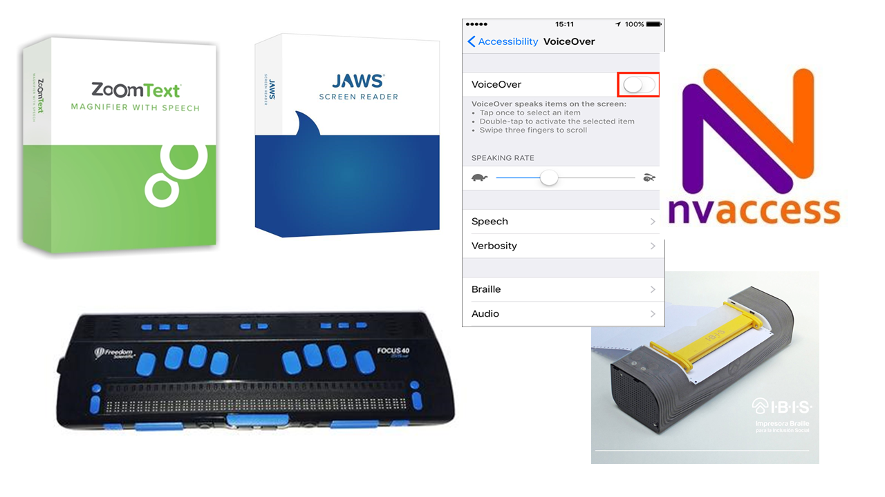
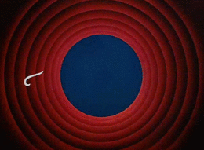

class: center, middle <center><img src="images/ub.png" width="150"></center> # **ACCESIBILIDAD** ## Apuntes de la asignatura Mireia Ribera .blue[ribera@ub.edu] --- class: center, middle, inverse ## https://mireiaub.github.io/acc2018/ --- class: summary # Índice + [Presentación de la asignatura](#tema0) + [Tema 1: Los usuarios](#tema1) + Visión, Oído y Motrices + Cognitivos y contextuales + [Tema 2: Normativa y Legislación](#tema2) + WCAG 2.1 + Legislación + Tema 3: Documentos digitales + [Documentos ofimáticos](#tema3.1) + [Web](#tema3.2) + [Video](#tema3.3) --- name:tema0 class: center, middle, inverse ## Presentación de la asignatura --- ## Objetivos de la asignatura - Entender las necesidades de los diferentes usuarios con discapacidades o transtornos de aprendizaje relacionados con el mundo digital. - Conocer la normativa y legislación relevante - Ser capaz de crear contenido digital teniendo en cuenta criterios de accesibilidad --- ## La profesora Mireia Ribera - **ribera@ub.edu** o mireia.ribera@gmail.com - Universidad de Barcelona. Departamento de Matemáticas e Informática + Edificio histórico + Gran Via Corts Catalanes 585 - Contacto previo por email, horas de consulta bajo petición --- ## ¿Qué se espera de los estudiantes matriculados? Los estudiantes deben participar de forma activa durante las explicaciones teóricas (** primera mitad de cada sesión **). Los estudiantes deben participar en las actividades planteadas por la profesora (** segunda mitad de cada sesión **) En las horas no presenciales los estudiantes acabaran de elaborar los informes de las tareas propuestas y comenzadas en el aula. --- ## ¿Cómo se evalua la asignatura? La evaluación se basa en dos elementos + Entrega de 4 prácticas con su correspondiente informe, iniciadas en el aula, relativos a los usuarios (10%), documentos ofimáticos (20%), web (20%) y video (20%), a través del campus virtual + Examen final teórico el día 17 de junio (30%) Para aprobar la asignatura tanto las entregas como el examen deben tener una media de 4 puntos mínima. Si no se aprueba la asignatura el 1 de julio se puede reevaluar (siempre que la media global sea de 3.5) el dia 1 de julio en un examen teórico-práctico. --- ## Calendario | Día-Mes | Contenido | Actividad | |---------|------------------------------------------------------|--------------------------------| | 11-feb | Usuarios visión, oído, motriz | Prueba de Tecnologías de Ayuda | | 13-feb | Usuarios cognitivos, contextuales | Prueba de Tecnologías de Ayuda | | 18-feb | WAI y WCAG | Documentos ofimáticos | | 18-feb | WCAG y leyes | Documentos ofimáticos | | 20-feb | Documentos digitales, PDF y EPUB3 | Web y Apps | | 25-feb | Web CMS, responsabilidades por perfil | Web y Apps | | 27-feb | Video, resproductores, subtítulos y audiodescripción | Subtitulación | --- <video controls width="70%" style="float:left"> <source src="media/coyote.mp4"> </video> <p width="30%" style="color:#ffffff">Coyote choca contra un tunel pintado en la pared</p> <p style="clear:both"></p> #Si nuestros productos no son accesibles... ##los usuarios experimentarán barreras que les impedirán usar, jugar o consultar nuestros servicios e información. --- class: center, middle, inverse name:tema1 # Tema 1: **Los usuarios** Según un estudio de Forrester Research con personas de 18 a 65 años: 57% de las personas se benefician de las mejoras en accesibilidad; y de cada 4 personas 1 tiene algún problema de vista; y de cada 5, 1 tiene algún problema de oído. --- ## Visión La discapacidad de visión puede impedir que el usuario perciba los colores, las figuras de texto o imágenes, o que pueda ver al completo una pantalla o un documento. Se denomina *discapacidad* cuando no puede ser corregido con gafas. --- ## Perfiles - **Personas daltónicas** : no perciben bien algunos de los colores (el daltonismo más común es la confusión de rojo y verde). Perciben la diferencia de colores por su luminosidad (rango blanco-negro) - **Personas con baja visión** : hay de dos tipos, de agudeza visual o de campo de visión. En el caso de la agudeza visual pueden tener dificultades con texto pequeño o imágenes muy densas. En el caso de campo de visión pueden no ver parte del contenido. A veces una excesiva luminosidad, así como parpadeos, flashes o movimiento les pueden molestar. Actualmente se distingue entre visión a distancia y visión de cerca. - **Personas ciegas** : No pueden percibir el contenido textual ni las imágenes. Necesitan un lector de pantalla. Fuente: BS8878 Accesibilidad web - Código de buenas prácticas, 2010. WHO --- ## Prevalencia - En el mundo 1.300 millones de personas de personas tienen una discapacidad de visión. La mayoría son mayores de 50 años. 826 de estos tienen problemas con la visión de cerca. Fuente: World Health Organisation, 2017 - [En España](https://www.ine.es/dynt3/inebase/es/index.htm?type=pcaxis&path=/t15/p419/a2017/p04/&file=pcaxis) - [En Cataluña](https://www.idescat.cat/pub/?id=regdis&n=443) Las causas principales son: retinopatía diabética (42%), cataratas (33%) y glaucoma (2%). Puedes ver una [simulación de las discapacidades de visión](https://www.youtube.com/watch?v=KVQvqmze5SU&feature=youtu.be) en este vídeo de Youtube. --- ## Tecnologías de ayuda <p style="text-align:center"></p> - **Magnificadores**: Amplían el contenido - **Lectores de pantalla** y **Ayudas visuales para la lectura** - **Línea braille** con teclado y anotador Braille - **Impresoras braille** --- ## Requisitos de contenido - Texto como tal y no como imagen. [Tutorial W3C](https://www.w3.org/WAI/tutorials/images/textual/) - Presentación a medida. [Ejemplo](https://agora4.org/es/inicio/) - Gráficos con patrones y legibles con lector de pantalla [Ejemplo](https://www.highcharts.com/samples/highcharts/accessibility/accessible-pie/) - Imágenes con contraste [Colour Contrast Analyser](https://developer.paciellogroup.com/resources/contrastanalyser/) - Idioma indicado en el código [Ejemplo](https://www.youtube.com/watch?v=NP94u7y_KkQ&t=0m10s) - Contexto explícito: número de página, sección, nivel de encabezado - Alternativas textuales para contenido visual [Tutorial WebAIM](https://webaim.org/techniques/alttext/) - Audiodescripción de vídeos [Explicación](https://www.youtube.com/watch?v=i_GrYOruY7w) - Formatos específicos de lectura: EPUB3, DAISY [Demo](https://www.youtube.com/watch?v=v9-HvSpzPvI) --- ## Oído La discapacidad de audición puede impedir o dificultar a una persona percibir los sonidos o distinguirlos con claridad. Algunos transtornos de audición se pueden solventar con un audífono o con un implante coclear. <p><img src="images\audifono.jpg" alt="audífono" /><img src="images\coclear.jpg"alt="parte externa e interna del implante coclear" /></p> --- ## Perfiles - Sordera **prelocutiva** vs **postlocutiva**: La sordera prelocutiva es una discapacidad aguda del oído que tienen lugar antes de aprender a hablar (en edad muy temprana). Las personas sordas prelocutivas pueden haber tenido serios problemas en la adquisición del lenguaje que hayan afectado seriamente el desarrollo del lenguaje. - Personas sordas **oralistas** vs **signistas** : Las personas sordas oralistas leen los labios y se comunican mediante el habla y es el grupo más numeroso. Las personas signistas basan su comunicación en el lenguaje de signos; se autoconsideran una comunidad cultural. El lenguaje de signos no es universal y existe, por ejemplo, un lenguaje de signos catalán, español, británico, americano... [Demostración lectura labios](https://www.youtube.com/watch?v=ksjnWmefBbk?t=56s) - Sordera **leve (21-40dB)** vs **severa (+71dB)** [Ejemplo](http://www.starkey.com/hearing-loss-simulator) Las personas jovenes con sordera, tienen un nivel de alfabetización alto en los países avanzados gracias a la detección precoz y a la estimulación logopeda. Ahora bien, a veces se ha optado por liberarles del aprendizaje de segundas lenguas como el inglés, hecho que les dificulta acceder a estudios superiores. --- ## Prevalencia - En el mundo 466 millones de personas de personas tienen una discapacidad de oído (5.2% de la población). La mayoría son personas adultas (91%). La prevalencia es superior en Sud Asia, Asia Pacífica y Africa Sub-Sahariana. Fuente: [World Health Organisation, 2012](https://www.who.int/pbd/deafness/WHO_GE_HL.pdf) y [WHO 2019](https://www.who.int/deafness/en/) - [En España](https://www.ine.es/dynt3/inebase/es/index.htm?type=pcaxis&path=/t15/p419/a2017/p04/&file=pcaxis) - [En Cataluña](https://www.idescat.cat/pub/?id=regdis&n=443) Las causas principales son: congénitas o adquiridas. --- ## Tecnologías de ayuda <p style="text-align:center"><img src="images/audio2.png" width= "65%" alt="funcionamiento del bucle magnético en una sala de conferencias con un amplificador cerca del orador y la sala cubierta por el bucle magnético; trasnmisor FM y collar inductivo" /></p> - **Audífonos**: Cambian la frecuencia del sonido, aumentan su volumen. A menudo incompatibles con el uso de auriculares. - ** Trasnmisores FM** : retransmiten el sonido de un aparato con máxima claridad. - ** Collar inductivo** : permite conectar la TV, teléfono móvil, etc con la prótesis auditiva - ** Bucle magnético ** : permite conectar la protesis auditiva con el sonido de la sala. Muy usado en teatros y espectáculos. - **Ayudas de escritura** suplen posibles deficiencias en la adquisición del lenguaje --- ## Requisitos de contenido - Contenido multimodal: avisos y comunicaciones deben facilitarse también con luz y texto - Subtítulos y lenguaje de signos para vídeo. [ejemplo](https://ableplayer.github.io/ableplayer/demos/video10.html) - Vídeo con pistas de audio principal y de fondo separadas - Lenguaje simple o en casos extremos de lectura fácil.[Tutorial](http://sid.usal.es/libros/discapacidad/26385/8-1/lectura-facil-metodos-de-redaccion-y-evaluacion.aspx) --- ## Motor - Este es un colectivo *muy heterogéneo*. Incluye personas con parálisis cerebral, con malformaciones congénitas, con cuadriplegía.[Un caso cercano](https://www.youtube.com/watch?time_continue=8&v=rRz4Ks4S92Y) - En el ámbito digital *las extremidades superiores son las más relevantes*, aunque en juegos y en realidad virtual todo el cuerpo puede ser un elemento de interacción. - La discapacidad *puede afectar el uso del teclado y del ratón, la posición de la pantalla o incluso el habla*. - La disposición física y colocación del ordenador, aparato o teléfono móbil puede impedir un uso adecuado para estos usuarios. El peso tambien puede representar una dificultad. --- ## Perfiles En este colectivo se diferencian los perfiles a partir del tipo de interacción que requieren - **Punteros alternativos o teclado de pantalla** : usuarios con una discapacidad severa que no pueden usar teclados estándares o ratones. - **Reconocimiento del habla** : usuarios con una discapacidad severa que interaccionan con el ordenador mediante órdenes de voz. - **Sólo teclado** : Usuarios con discapacidades leves que no pueden usar un ratón con precisión. Fuente: BS8878 Accesibilidad web - Código de buenas prácticas, 2010. --- ## Prevalencia - Las estadísticas en este grupo no son muy fiables porque se incluyen en el mismo grupo todos los tipos de discapacidad motora, siendo las afectaciones de las piernas las más comunes. - Este colectivo ha aumentado los últimos años debido a los accidentes de tráfico [noticia del instituto Guttmann](https://www.guttmann.com/es/noticias/institut-guttmann-celebra-vii-encuentro-monitores-programa-game-over-policias-educadores) - [En España](https://www.ine.es/dynt3/inebase/es/index.htm?type=pcaxis&path=/t15/p419/a2017/p04/&file=pcaxis) - [En Cataluña](https://www.idescat.cat/pub/?id=regdis&n=443) --- # Incluso en el mundo de los juguetes <a href="https://www.amsvans.com/blog/wheelchair-barbie-dolls-were-not-so-accessible/"><img src="images/becky.jpg" alt="Becky, la amiga de Barbie"/></a> --- ## Tecnologías de ayuda <p style="text-align:center"><img src="images/motor.png" width="70%" alt="Púnteros, joystick, pulsador de barbilla, puntero de boca, pantalla con seguimiento de mirada, interfaz mente-ordenador, panel táctil de comunicación aumentada" /></p> - **Punteros y ratones accesibles**: Adaptados a los restos de mobilidad - **Joysticks**: solventan temblores y falta de precisión - **Sistemas de soplado**: funcionan como ratones - **Pantallas táctiles** - **Sistemas de eye-tracking**: permiten interaccionar con movimientos de los ojos - **Brain computer interfaces**: en experimentación. - **Ayudas de autocompletado**: reducen la cantidad de información requerida --- ## Requisitos de contenido A este grupo no le afecta el contenido sino sobre todo la interacción. - Vínculos separados y con un área de activación grande (efecto "big finger") - Posibilidad de uso del teclado - Reducción de pasos y clics para realizar tareas - Formularios simples y con autocompletado, sin desplegables - Límites de tiempo generosos --- ## Cognitivos - En este grupo incluimos a personas que son autónomas en el uso del ordenador y navegando Internet pero que pueden experimentar dificultades asociadas a la comprensión del lenguaje y a la complejidad del contenido. - También aquí incluimos a personas con trastornos del espectro autista o Asperger, que pueden tener dificultades para entender emociones o para interpretar dobles sentidos o el lenguaje corporal. - Este grupo ha sido un poco olvidado por las pautas de accesibilidad, aunque recientemente se están tomando acciones para corregir este olvido. --- ## Perfiles Aunque hay perfiles muy diversos, como patrones de interacción principal distinguiremos: - *Dislexia, transtornos de aprendizaje y de atención o hiperactividad* : Las personas de este grupo muestran dificultades de concentración y de lectura. Pueden también tener problemas con la escritura. Los textos largos o formularios pueden presentarles barreras importantes. - *Analfabetismo funcional* : Las personas de este grupo pueden tener dificultades de comprensión de la lengua por niveles bajos de educación, inmigración y aprendizaje de segundas lenguas u otros motivos. Fuente: BS8878 Accesibilidad web - Código de buenas prácticas, 2010. --- ## Prevalencia - Las estadísticas de este grupo no *son fiables* porque no se han recogido sistemáticamente hasta hace muy poco. Algunas veces se habla de "discapacidades ocultas" pues los propios usuarios no quieren reconocer sus características. - En el caso de la dislexia, la *transparencia* del idioma acentúa o no la prevalencia. Por ejemplo en países de habla inglesa se habla de un 15% de personas con dislexia, mientras que en países de habla hispana se habla de un 5% a un 10% de población afectada. --- ## Tecnologías de ayuda <p style="text-align:center"><img src="images/Cognitivos.png" width="70%" alt="Claroread, herramienta de deletreo, ReadSpeaker, Balabolka, Ivona tts, Dolphin EasyReader" /></p> - **Ayudas de lectura**: Que resalten una linea o palabra para facilitar el seguimiento. Que lean en voz alta - **Ayudas de escritura**: para evitar o minimizar errores - **Herramientas de texto a habla**: para tener un refuerzo auditivo en la lectura --- ## Requisitos de contenido - Según el grado: lenguaje simple, lectura fàcil, [AAC](https://aacinstitute.org/introduction-to-aac/) - Mapas conceptuales - Uso intensivo de diferentes tipografías y colores - Evitar complejidad y densidad de información. Evitar textos largos - Reducir la carga de memoria. Pasos claros y cortos. --- ## Discapacidades contextuales <p style="text-align:center"><img src="images/Contextual1.png" width="70%" alt="La discapacidade no es una condición de salud, es una falta de encaje en la interacción humana" /></p> - La tecnología se usa en escenarios diversos, no óptimos en iluminacion, silencio, libertad de movimientos... ello genera situaciones "discapacitantes" --- ## Los tres principios del diseño inclusivo 1. Reconozcamos la exclusión + aplicamos sesgos por nuestra realidad: género, idioma, conocimientos técnicos, capacidad física, realidad socioeconómica 2. Aprendamos de la diversidad + La diversidad nos fuerza a encontrar soluciones creativas y a adaptar nuestros diseños a diferentes usos 3. Resolver los casos extraordinarios beneficia a todo el mundo --- class: center, middle, inverse <center></center>